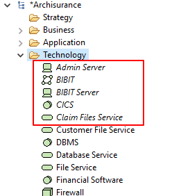
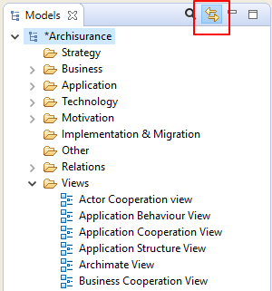

To delete one or more elements in the Model Tree select them and choose "Delete" from the main "Edit" menu or from the main toolbar.
Note that if an element that you wish to delete appears in one or more Views you will be warned that it is referenced in those Views. If you then delete the element from the tree you will also delete it from any Views where it is referenced.

Warning about deleting an element
To rename an element or relationship in the Model Tree choose "Rename" from the main Edit menu or from the right-click context menu. You can also rename it in the Properties Window.
To duplicate Elements or Views in the Model Tree select "Duplicate" from the main "Edit" menu or from the right-click context menu. Note that Duplicate Views contain references to the original elements copied.
To edit the Properties for a selected element or relationship in the Model Tree, select the tree node and open the Properties Window either by double-clicking the tree node or from the main "Window" menu or main toolbar.
Each element in the Model Tree has different properties that can be set or viewed in the Properties Window. For more information see the section, The Properties Window.
Note - some properties can only be edited when the element is selected in a View (for example, the fill colour, font or line width).
Elements in the Model Tree can be added to any number of diagram Views in the model by dragging them onto the View's canvas (see the section, "Views"). When an element has been added or used in a View the font used in the Model Tree for that element is normal. However, if the element only exists in the Model Tree and is not used in any View it is shown with an italic font:
Italic font shows elements not used in Views
This makes it convenient to see those elements that may have become redundant and can be deleted.
When selecting elements in the Model Tree and in diagram Views it is sometimes useful to synchronise the selection between the elements in both windows. Pressing the "Link to View" button in the Model Tree window allows this to happen:
The "Link to View" button
This button is a toggle and can be turned off.
Synchronised selection is possible on more than one selected element.
Note that synchronised selection is only possible if a relevant View is open. Selecting an element in the Model Tree will not synchronise a selection in a View if that View does not contain that particular element or elements.